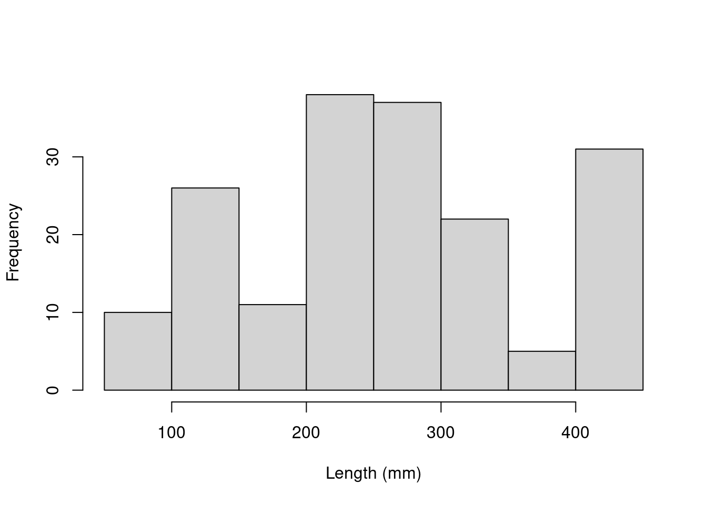

Chapitre 9 Étape 1. Construction du modèle a priori
Modèle basé sur connaissance a priori:
Nous voulons déterminer si la position trophique peut être prédite par la longueur corporelle, tout en prenant en compte la variation entre les espèces et les lacs. Donc nous voulons un modèle qui ressemble à ceci:
\[PT_{ijk} \sim Longueur_i + Lac_j + Espèce_k + \epsilon_{ijk}\] où:
- \(PT_{ijk}\) est la position trophique du poisson (\(i\)) du lac (\(j\)) et de l’espèce (\(k\))
- \(\varepsilon\) sont les résidus du modèle (c’est-à-dire la variation inexpliquée).
9.1 Exploration des données
Les données ont-elles la bonne structure?
Vérifiez la structure des données :
# Vérifiez la structure des données
str(fish.data)## 'data.frame': 180 obs. of 4 variables:
## $ Lake : Factor w/ 6 levels "L1","L2","L3",..: 1 1 1 1 1 1 1 1 1 1 ...
## $ Fish_Species: Factor w/ 3 levels "S1","S2","S3": 1 1 1 1 1 1 1 1 1 1 ...
## $ Fish_Length : num 105 195 294 414 237 ...
## $ Trophic_Pos : num 2.6 2.7 2.74 2.74 2.79 ...Observez maintenant la distribution des échantillons pour chaque facteur:
# Observez la distribution des échantillons pour chaque
# facteur:
table(fish.data[, c("Lake", "Fish_Species")])## Fish_Species
## Lake S1 S2 S3
## L1 10 10 10
## L2 10 10 10
## L3 10 10 10
## L4 10 10 10
## L5 10 10 10
## L6 10 10 10Ce jeu de données est parfaitement équilibré, mais les modèles mixtes peuvent analyser des designs expérimentaux non équilibrés, comme c’est souvent le cas en écologie!
Regardez ensuite la distribution des variables continues:
# Regardez la distribution des variables continues.
hist(fish.data$Fish_Length, xlab = "Length (mm)", main = "")
hist(fish.data$Trophic_Pos, xlab = "Trophic position", main = "")
Des déviations majeures pourraient causer des problèmes d’hétéroscédasticité. Si nécessaire, faites des transformations. Dans ce cas-ci, les données semblent correctes.
9.2 Vérifier la colinéarité
Vérifier la colinéarité entre vos variables explicatives
Le problème avec les prédicteurs colinéaires est simplement qu’ils expliquent la même chose, alors leur effet sur la variable réponse sera confondu dans le modèle. Par défaut, le modèle attribuera beaucoup de pouvoir explicatif à la première variable du modèle et peu de pouvoir aux variables qui suivent.
Dans cet exemple, il n’y a pas de risque de colinéarité avec seulement une variable continue. Si vous aviez une autre variable continue (Var2), une façon simple de vérifier la colinéarité est cor(var1, var2)
Voici un exemple de colinéarité.
9.3 Défi 3
C’est un problème de réflexion!
Quelles mesures supplémentaires aurions-nous pu prendre sur le terrain qui auraient pu être fortement corrélées avec la longueur corporelle?
9.4 Considérez l’échelle
Considérez l’échelle de vos données
Si deux variables dans un même modèle ont des échelles très différentes, il est probable que le modèle indique un problème de convergence en essayant de calculer les paramètres.
La correction Z standardise les variables et résout ce problème (fonction scale() dans R) :
\[z = \frac{x-moyenne(x)}{écart.type(x)}\]
Considérez l’échelle des variables dans notre ensemble de données. La longueur corporelle est mesurée sur une longue échelle, tandis que la position trophique est mesurée sur une échelle qui est beaucoup plus courte.
Parce que nos données ont des échelles très différentes, on applique la correction Z
# Longueur corrigée, 'à la main'
fish.data$Z_Length <- (fish.data$Fish_Length - mean(fish.data$Fish_Length))/sd(fish.data$Fish_Length)
# Position trophique corrigée, avec la fonction scale
fish.data$Z_TP <- scale(fish.data$Trophic_Pos)9.5 Avez-vous besoin d’un MLM?
Déterminez si vous avez besoin d’un modèle mixte.
Pour savoir si un modèle mixte est nécessaire pour vos données, vous devez déterminer s’il est important de prendre en compte l’effet aléatoire de facteurs qui pourraient influencer la relation qui vous intéresse (dans notre cas, lac et espèce).
Nous pouvons le faire en:
- Créant un modèle linéaire sans les facteurs qui pourraient avoir un effet aléatoire
- Calculant les résidus de ce modèle linéaire
- Produisant un graphique de la valeur des résidus en fonction des niveaux des facteurs potentiellement aléatoires
Créer un modèle linéaire sans les facteurs
lm.test <- lm(Z_TP ~ Z_Length, data = fish.data)Calculer les résidus de ce modèle linéaire
lm.test.resid <- rstandard(lm.test)Représentez graphiquement la valeur des résidus en fonction des niveaux des facteurs
plot(lm.test.resid ~ as.factor(fish.data$Fish_Species), xlab = "Species",
ylab = "Standardized residuals")
abline(0, 0, lty = 2)plot(lm.test.resid ~ as.factor(fish.data$Lake), xlab = "Lake",
ylab = "Standardized residuals")
abline(0, 0, lty = 2)Les résidues semblent varier de façon non-aléatoire entre les espèces et entre les lacs. Ces patrons suggèrent qu’il y a de la variance résiduelle qui pourrait être expliquée par ces facteurs, et ils devraient donc être inclus dans le modèle!